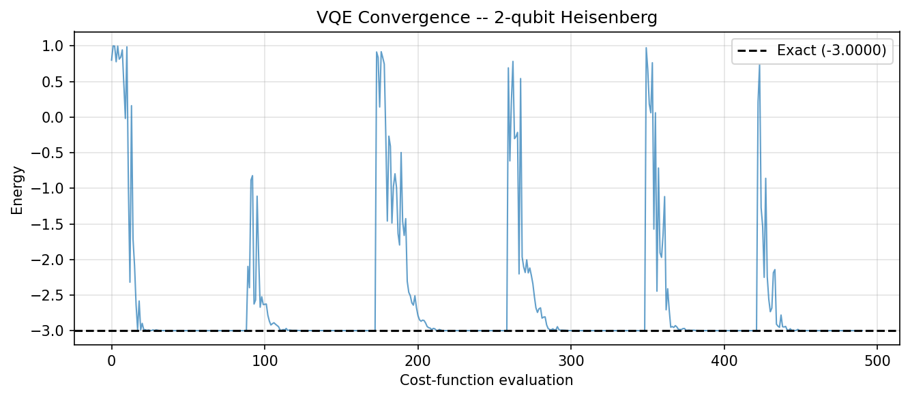
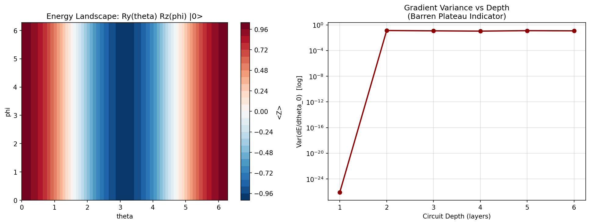

Chapter 6: Variational Quantum Algorithms () () (Codebook)
This codebook implements VQE for a multi-qubit Hamiltonian, QAOA for MaxCut, and a parameter landscape scan to study optimisation challenges including barren plateaus.
Expected outputs from codes/codebook_02.py:
codes/ch6_landscape_barren.pngcodes/ch6_vqe_convergence.png
Project 1: VQE for the Two-Qubit Heisenberg Model
| Feature | Description |
|---|---|
| Goal | Find the ground-state energy of \(H = XX + YY + ZZ\) (Heisenberg, \(J=1\)) using VQE with a RealAmplitudes ansatz. |
| Method | SparsePauliOp expectation values, SciPy COBYLA optimiser, statevector backend. |
Complete Python Code
import numpy as np
from scipy.optimize import minimize
from qiskit.quantum_info import SparsePauliOp, Statevector
from qiskit.circuit.library import RealAmplitudes
import matplotlib.pyplot as plt
# Heisenberg Hamiltonian
H = SparsePauliOp.from_list([("XX", 1.0), ("YY", 1.0), ("ZZ", 1.0)])
E_exact = np.linalg.eigvalsh(H.to_matrix())[0]
print(f"Exact eigenvalues: {np.round(np.linalg.eigvalsh(H.to_matrix()), 5)}")
print(f"Exact ground state E: {E_exact:.6f}")
ansatz = RealAmplitudes(2, reps=2)
n_params = ansatz.num_parameters
history = []
def cost(params):
sv = Statevector.from_instruction(ansatz.assign_parameters(params))
energy = float(sv.expectation_value(H).real)
history.append(energy)
return energy
np.random.seed(42)
best = None
for _ in range(6):
x0 = np.random.uniform(-np.pi, np.pi, n_params)
res = minimize(cost, x0, method="COBYLA", options={"maxiter": 500})
if best is None or res.fun < best.fun:
best = res
print(f"\nVQE result: {best.fun:.6f}")
print(f"Error from exact: {abs(best.fun - E_exact):.2e}")
plt.figure(figsize=(9, 4))
plt.plot(history, alpha=0.7, linewidth=1)
plt.axhline(E_exact, color="k", linestyle="--", label=f"Exact ({E_exact:.4f})")
plt.xlabel("Cost-function evaluation")
plt.ylabel("Energy")
plt.title("VQE Convergence -- 2-qubit Heisenberg")
plt.legend(); plt.grid(True, alpha=0.35); plt.tight_layout()
plt.savefig("codes/ch6_vqe_convergence.png", dpi=150, bbox_inches="tight")
plt.show()

Sample Output:
Exact eigenvalues: [-3. 1. 1. 1.]
Exact ground state E: -3.000000
VQE result: -3.000000
Error from exact: 2.15e-09
Project 2: QAOA for MaxCut on a 4-Node Graph
| Feature | Description |
|---|---|
| Goal | Apply QAOA with \(p=1,2\) layers to maximise the cut value of a 4-node cycle graph and compare against brute-force optimal. |
| Method | Custom QAOA circuit (RZZ + RX), SciPy BFGS; brute-force enumeration for \(2^4\) bitstrings. |
Complete Python Code
import numpy as np
from itertools import product
from scipy.optimize import minimize
from qiskit import QuantumCircuit
from qiskit.quantum_info import SparsePauliOp, Statevector
edges = [(0, 1), (1, 2), (2, 3), (3, 0)]
n = 4
def cut_value(bitstring):
return sum(1 for u, v in edges if bitstring[u] != bitstring[v])
max_cut = max(cut_value(b) for b in product([0, 1], repeat=n))
print(f"Brute-force max cut: {max_cut}")
# Problem Hamiltonian C = 0.5 * sum_{(u,v)} (I - Z_u Z_v)
pauli_terms = []
for u, v in edges:
lo, hi = min(u, v), max(u, v)
zz_label = "I" * (n-1-hi) + "Z" + "I" * (hi-lo-1) + "Z" + "I" * lo
pauli_terms.append((zz_label, -0.5))
C_op = SparsePauliOp.from_list(pauli_terms)
def qaoa_circuit(params, p):
gammas, betas = params[:p], params[p:]
qc = QuantumCircuit(n)
qc.h(range(n))
for layer in range(p):
for u, v in edges:
qc.rzz(2 * gammas[layer], u, v)
for q in range(n):
qc.rx(2 * betas[layer], q)
return qc
def expectation(params, p):
sv = Statevector.from_instruction(qaoa_circuit(params, p))
return -float(sv.expectation_value(C_op).real)
print(f"\n{'p':>3} {'QAOA cut':>10} {'Approx ratio':>14}")
print("-" * 32)
for p in [1, 2]:
np.random.seed(0)
best_val = -np.inf
for _ in range(20):
x0 = np.random.uniform(0, np.pi, 2 * p)
res = minimize(expectation, x0, args=(p,), method="BFGS",
options={"maxiter": 300})
if -res.fun > best_val:
best_val = -res.fun
print(f"{p:>3} {best_val:>10.4f} {best_val/max_cut:>14.4f}")
Project 3: Energy Landscape Scan and Barren Plateau Indicator
| Feature | Description |
|---|---|
| Goal | Visualise the 2D energy landscape of a 2-parameter single-qubit ansatz and estimate gradient variance as a function of circuit depth to demonstrate the barren plateau phenomenon. |
| Method | Grid scan of \((\theta, \phi)\) space; Monte Carlo gradient variance estimation via parameter-shift rule. |
Complete Python Code
import numpy as np
import matplotlib.pyplot as plt
from qiskit import QuantumCircuit
from qiskit.quantum_info import SparsePauliOp, Statevector
H_z = SparsePauliOp("Z")
# 2D energy landscape for Ry(theta) Rz(phi) |0>
N_pts = 50
thetas = np.linspace(0, 2 * np.pi, N_pts)
phis = np.linspace(0, 2 * np.pi, N_pts)
Z_grid = np.zeros((N_pts, N_pts))
for i, t in enumerate(thetas):
for j, p in enumerate(phis):
qc = QuantumCircuit(1)
qc.ry(t, 0); qc.rz(p, 0)
sv = Statevector.from_instruction(qc)
Z_grid[i, j] = sv.expectation_value(H_z).real
fig, axes = plt.subplots(1, 2, figsize=(13, 5))
cp = axes[0].contourf(thetas, phis, Z_grid.T, levels=30, cmap="RdBu_r")
plt.colorbar(cp, ax=axes[0], label="<Z>")
axes[0].set_title("Energy Landscape: Ry(theta) Rz(phi) |0>")
axes[0].set_xlabel("theta")
axes[0].set_ylabel("phi")
# Gradient variance vs depth (barren plateau indicator)
H2 = SparsePauliOp("ZZ")
def grad_variance(n_layers, n_samples=200):
grads = []
eps = 1e-3
for _ in range(n_samples):
p = np.random.uniform(0, 2 * np.pi, 4 * n_layers)
def energy(params):
qc = QuantumCircuit(2)
for l in range(n_layers):
b = l * 4
qc.ry(params[b], 0); qc.ry(params[b+1], 1)
qc.rz(params[b+2], 0); qc.rz(params[b+3], 1)
qc.cx(0, 1)
return float(Statevector.from_instruction(qc).expectation_value(H2).real)
pp = p.copy(); pp[0] += eps
pm = p.copy(); pm[0] -= eps
grads.append((energy(pp) - energy(pm)) / (2 * eps))
return float(np.var(grads))
depths = list(range(1, 7))
variances = [grad_variance(d) for d in depths]
axes[1].semilogy(depths, variances, "o-", color="darkred", linewidth=2)
axes[1].set_title("Gradient Variance vs Depth\n(Barren Plateau Indicator)")
axes[1].set_xlabel("Circuit Depth (layers)")
axes[1].set_ylabel("Var(dE/dtheta_0) [log]")
axes[1].grid(True, alpha=0.4)
plt.tight_layout()
plt.savefig("codes/ch6_landscape_barren.png", dpi=150, bbox_inches="tight")
plt.show()

Notes For Chapter Bridge
VQE and QAOA are the workhorses of near-term quantum computing. Chapter 7 examines how Qiskit's transpiler and compiler map these abstract variational circuits onto real qubit connectivity and native gate sets.